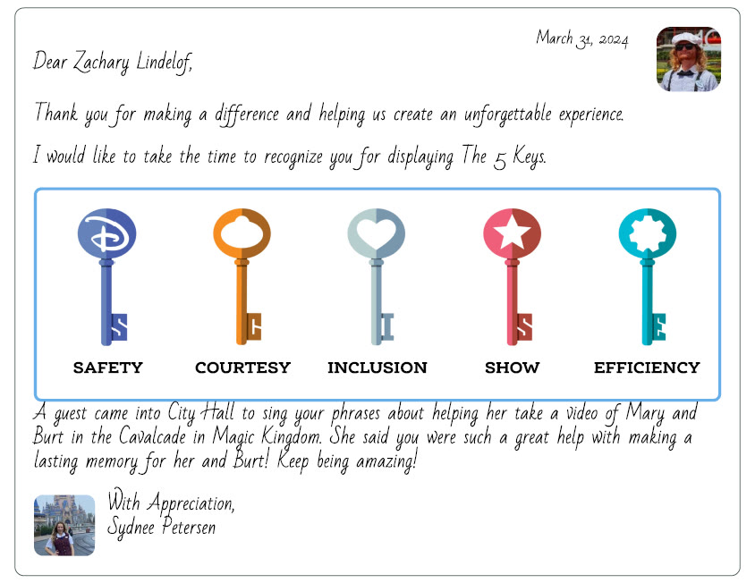
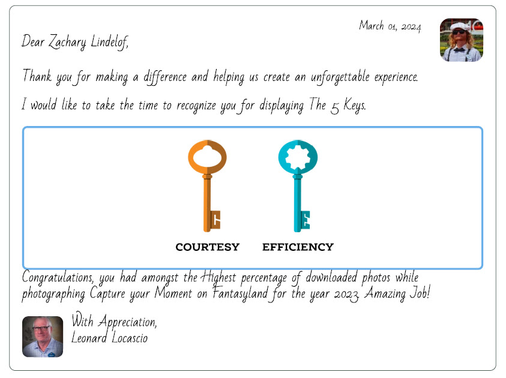

WALT DISNEY WORLD - PHOTOPASS PHOTOGRAPHER
Nov. 2021 - Oct. 2022: Disney College Program
Oct. 2022 - present: Full-time Cast Member
Specialties include: Capture Your Moment, Support trained and Castle trained - with a short stint Relief Coordinating at Magic Kingdom.
One of my Capture Your Moment sessions went viral on USA Today, ABC7 Chicago, and more. With over 500+ private sessions of all differing celebrations, my experience with photography and making long-lasting memories work hand in hand.


CAST COMPLIMENTS
At Walt Disney World, guests and cast members can leave personalized thank you notes based on performance. While Disney says “these are not indications of performance”, they are nice and the only bookmarked ways to help remember official experiences on the job that mattered. NOTE: These are just a handful of the cast compliments I recieved a Walt Disney World Resort.



To see all 70+ downloaded CC's, reach out to me! hello@lindeloflimited.com
LEGAL DISCLAIMER: ALL DISNEY TRADEMARKS ARE OWNED BY THE WALT DISNEY COMPANY “TWDC” AND IT’S AFFILIATED COMPANIES. THIS SITE IS NOT AFFILIATED WITH TWDC, OR ANY OF THE AFFILIATED COMPANIES. MY WORK WAS MY INDIVIDUAL EXPERIENCE BASED ON MY PERSONAL EXPERIENCES AND IS NOT ANY INDICATION, QUALIFICATION, OR REPRESENTATION OF WALT DISNEY WORLD, DISNEY PHOTOPASS, OR ANY AFOREMENTIONED PARTY. ALL CONTENT WAS OBTAINED WITH PERMISSION AND/OR COMPLICIT WITH SOCIAL MEDIA COMPANY POLICY.